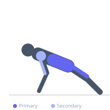
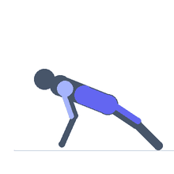

Exercise guide / Stability Ball Pike and Roll-In
Stability Ball Pike and Roll-In
A stability ball core and hip flexor exercise in which the exerciser begins in a push-up plank position with shins on the ball and then pikes the hips upward while rolling the ball in toward the hands. The pike position demands significant anterior core compression, hip flexor control, and shoulder stability simultaneously. The unstable ball surface amplifies the demand on all stabilizing muscles throughout the movement.
Primary muscles
psoas major
iliacus
rectus abdominis
Secondary muscles
deltoid anterior
triceps long head
Stabilizers
transverse abdominis
trapezius lower
Equipment
No Equipment (Bodyweight)


Starting position
- Begin in a push-up plank position with both shins resting on a stability ball and hands on the floor directly under the shoulders.
Setup
- Use a fully inflated stability ball. Begin with the ball closer to the knees (less leverage) before advancing to the shins-on-ball position.
Steps
- Step 1: Begin in the plank with shins on the ball, body in a rigid straight line.
- Step 2: Drive the hips upward toward the ceiling, rolling the ball in toward the hands. The body forms a pike (inverted V) at the top.
- Step 3: Hold the pike position for 1-2 seconds.
- Step 4: Slowly lower the hips and roll the ball back to the starting plank. Repeat.
Coaching cues
- Drive the hips to the ceiling — think of an upside-down V
- Keep the arms straight throughout — this is not a push-up
- Slow on the way back down — control every inch of the rollout
Breathing
- Exhale as you pike the hips up. Inhale as you lower back to plank.
Range of motion
- Full pike with hips significantly above shoulder height. Full plank extension on the return.
Tempo
- 2s pike up, 2s hold, 3s slow rollout return.
Common mistakes
- Collapsing the lower back during the plank between repetitions
- Rushing the rollout back to plank — control the return
- Not achieving a true pike — hips must rise significantly above shoulder level for proper activation
Safety
- Requires shoulder stability and core strength — build both before attempting
- If lower back pain occurs on the return to plank, brace the core more firmly or reduce range
Training
- strength: 5–10 reps
- strength: 2–3 sets
- Rest: {'strength': 60}